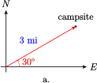
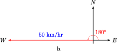

Section 9.1 Geometric Form
Subsection Introduction
One way to specify a location is to give a direction and a distance from a fixed landmark. For example, we might say that the airport is located 8 miles northeast of the town hall, or that a ship has been sighted 20 miles from the lighthouse in the direction 10° west of north. It's not enough to give just the distance to the object or just the direction; we need both to describe the object's location.
In mathematics, a quantity defined by both a magnitude (such as a distance) and a direction is called a vector. A vector used to designate location relative to a fixed landmark, as in the examples above, is called a position vector. Vectors are also used to analyze motion and velocity in two or three dimensions, to study forces such as gravity and electric fields, and to design computer graphics and animation.
We often illustrate a vector by an arrow. The length of the arrow represents the magnitude of the vector, and the direction of the vector is indicated by the head of the arrow.
Example 9.1.
Draw an arrow to represent each vector.
- The campsite is 3 miles away, in a direction \(30\degree\) north of east.
- The wind is blowing due west at 50 kilometers per hour.
-
We draw an arrow making an angle of \(30\degree\) from east. The length of the arrow is 3 units, representing 3 miles. See figure (a) below.
 - We draw an arrow pointing due west, that is, making an angle of \(180\degree\) from east. The length of the arrow represents the speed of the wind, 50 kilometers per hour. See figure (b) above.
Checkpoint 9.2.
Draw an arrow to represent the velocity of an airplane travelling southeast at a speed of 300 miles per hour.
Subsection Notation for Vectors
In print, we use boldface characters such as \(\bf{u}\) and \(\bf{v}\) to represent vectors. When writing by hand, we use an arrow above a variable to indicate that it is a vector, like this: \(~\vec{v}\text{.}\)
It is important to distinguish vector quantities from quantities that have magnitude only, such as length or temperature. These quantities are called scalars. They are the constants and variables you are used to dealing with, which are usually denoted by italic letters such as \(x\) or \(k\text{.}\)
The length of a vector \(\bf{v}\) is called its magnitude, and is denoted by \(\|{\bf{v}}\|\).
Caution 9.3.
Note that the magnitude of a vector is a scalar quantity. Thus, \(\bf{v}\) denotes a vector, but \(\|{\bf{v}}\|\) denotes a scalar.
Two vectors may have the same length, but point in different directions. The figure at right shows two vectors, \(\bf{u}\) and \(\bf{v}\text{,}\) that have the same magnitude but different directions. For this example, \(\|{\bf{u}}\|=\|{\bf{v}}\|\text{,}\) but \(\bf{u} \not=\bf{v}\text{.}\) Two vectors are equal if and only if they have the same length and the same direction, but they can start at different locations. The fact that we can move vectors from one location to another is a useful property.
Example 9.4.
Which of the vectors shown at right are equal?
Only vectors \(\bf{c}\) and \(\bf{g}\) are equal. Vectors \(\bf{b}\text{,}\) \(\bf{c}\text{,}\) and \(\bf{f}\) are all the same length but have different directions. Vectors \(\bf{a}\) and \(\bf{d}\) also have equal lengths but different directions. Vectors \(\bf{d}\) and \(\bf{e}\) have the same direction but different lengths.
Checkpoint 9.5.
Sketch a vector \(\bf{w}\) that is equal to the vector \(\bf{v}\) shown at right, but that starts at the point \((-4,2)\text{.}\)
Subsection Scalar Multiplication of Vectors
We can multiply a vector by a scalar. The figure below shows the vector \(\bf{w}\) and the vector \(\bf{v} = 3\bf{w}\text{.}\) Multiplying by a positive scalar changes the length of a vector but not its direction.
Thus, the vector \(\bf{v}\) is 3 times as long as the vector \(\bf{w}\text{.}\) If we multiply a vector by a negative scalar, we alter its length and reverse its direction; that is, we change the direction by \(180\degree\text{.}\) For example, the vector \(\bf{u} = -\frac{1}{2}\bf{w}\text{.}\) It is half the length of \(\bf{w}\text{,}\) and points in the opposite direction.
In general, if \(k\) is a real number, then \(k\bf{v}\) represents the vector with magnitude \(k\) times the magnitude of \(\bf{v}\text{.}\) It points in the same direction as \(\bf{v}\) when \(k \gt 0\) and in the opposite direction from \(\bf{v}\) when \(k \lt 0\text{.}\) Real numbers are called scalars because they “scale” vectors in this way, and multiplying a scalar times a vector is called scalar multiplication.
Example 9.6.
The figure at right shows the vector \(\bf{v}\) and two scalar multiples of \(\bf{v}\text{.}\)
The vector \(\frac{2}{3}\bf{v}\) points in the same direction as \(\bf{v}\text{,}\) but is only two-thirds as long as the vector \(\bf{v}\text{.}\) The vector \(~-\sqrt{3}\bf{v}~\) points in the direction opposite to \(\bf{v}\) and is \(\sqrt{3}\) or approximately \(1.7\) times as long as \(\bf{v}\text{.}\)
Note that because \(\bf{v}\) has a slope of \(\dfrac{-2}{5}\text{,}\) so does any nonzero multiple of \(\bf{v}\text{.}\)
Checkpoint 9.7.
For the vector \(\bf{w}\) shown at right, draw the vectors \(-0.6\bf{w}\) and \(\sqrt{2}\bf{w}\text{.}\)
Subsection Addition of Vectors
A displacement vector represents the change in position from one point to another.
For example, suppose you leave home and travel 6 miles east and then 8 miles north. These two displacements are represented by the vectors \(\bf{u}\) and \(\bf{v}\) shown at right. When we follow one displacement vector by a second one, the net displacement is a new vector, \(\bf{w}\text{,}\) starting at the base of the first vector and ending at the head of the second vector.
In this example, notice that \(\bf{w}\) forms the hypotenuse of a right triangle, so we can calculate its magnitude and direction.
The net displacement gives your current position relative to home: 10 miles in the direction \(53.1\degree\) north of east. When we follow one vector by a second vector as described above, we are adding the two vectors. The sum is called the resultant vector.
Example 9.8.
For each pair of vectors, draw the resultant vector \(\bf{w} = \bf{u}+\bf{v}\text{.}\)
We draw a copy of the vector \(\bf{v}\) so that its base (or starting point) is placed on the head (or ending point) of \(\bf{u}\text{,}\) and then we draw vector \(\bf{w}\) from the base of \(\bf{u}\) to the head of \(\bf{v}\text{.}\)
Checkpoint 9.9.
Draw the resultant vector \(\bf{w} = \bf{u}+\bf{v}\text{.}\)
When the resultant vector forms the third side of a triangle, we can use the laws of sines and cosines to calculate its length and direction.
Example 9.10.
You are camping in a state park. In the morning, you start off from your campground at point \(C\) and hike 4 miles southwest to point \(B\text{.}\) After taking a break, you continue hiking, and this time you cover 3 miles in the direction \(30\degree\) east of north, and arrive at point \(A\text{,}\) as shown at right. What is your position relative to the campground?
The resultant vector, \(\bf{w}\text{,}\) forms the side opposite a \(15\degree\) angle. We use the law of cosines to compute its length.
Thus, \(\|{\bf{w}}\|= 1.348\text{,}\) so you are 1.348 miles from the campground. To find the direction back to the campground, we use the law of sines to calculate the angle at \(C\text{.}\)
The angle labeled \(\theta\) in the figure is \(45\degree - 35.2\degree = 9.9\degree\text{,}\) so at point \(A\) you are 1.348 miles from camp in the direction \(9.8\degree\) south of west.
Checkpoint 9.11.
Delbert has gone sailing with friends. After leaving the marina, they sail for 5 miles on a bearing of \(160\degree\) and stop at Gull Island for lunch. (Recall that bearings are measured clockwise from north.) After lunch, they have sailed for 3 miles on a bearing of \(25\degree\) when they get a phone call to return home. What bearing is the most direct route back to the marina, and how far is it?
\(56.4\degree\) W of N, 3.58 mi
It doesn't matter which order we choose to add two vectors. As with the ordinary addition of scalars, the addition of vectors is commutative, so that \(\bf{u} + \bf{v} = \bf{v} + \bf{u}\text{.}\) To see this, first draw \(\bf{u}\) and \(\bf{v}\) starting at the same point.
- To represent \(\bf{u} + \bf{v}\text{,}\) we place the base of \(\bf{v}\) at the head of \(\bf{u}\text{,}\) and draw the resultant vector \(\bf{u} + \bf{v}\) as shown at left.
- To represent \(\bf{v} + \bf{u}\text{,}\) we place the base of \(\bf{u}\) at the head of \(\bf{v}\text{,}\) and the resultant vector \(\bf{v} + \bf{u}\) is the same as the vector \(\bf{u} + \bf{v}\text{.}\)
Because the vector sum forms the diagonal of a parallelogram in this picture, the rule for adding vectors is sometimes called the parallelogram rule.
We summarize the operations on vectors as follows.
Operations on Vectors.
-
We can multiply a vector, \(\bf{v}\text{,}\) by a scalar, \(k\text{.}\)
If \(k \gt 0\text{,}\) the magnitude of \(k\bf{v}\) is \(k\) times the magnitude of \(\bf{v}\text{.}\) The direction of \(k\bf{v}\) is the same as the direction of \(\bf{v}\text{.}\)
If \(k \lt 0\text{,}\) the direction of \(k\bf{v}\) is opposite the direction of \(\bf{v}\text{.}\)
We can add two vectors \(\bf{v}\) and\(\bf{w}\) with the parallelogram rule.
Caution 9.12.
Unless \(\bf{u}\) and \(\bf{v}\) are parallel vectors, it is not true that the length of \(\bf{u} + \bf{v}\) is just the sum of the lengths of \(\bf{u}\) and \(\bf{v}\text{.}\) Vector addition is a geometric operation; the length of \(\bf{u} + \bf{v}\) depends on the lengths of \(\bf{u}\) and \(\bf{v}\) and on the angle between them. Be careful to distinguish between regular addition of scalars, such as \(\|{\bf{u}}\| + \|{\bf{v}}\|\text{,}\) and vector addition, \(\bf{u} + \bf{v}\text{,}\) which requires the parallelogram rule.
Subsection Velocity
Physicists and mathematicians use the word velocity to mean not simply speed but the combination of speed and direction of motion. The interesting thing about velocities is that they add like vectors; if an object's motion consists of two simultaneous components, the resulting displacement is the same as if the motions had occurred one after the other.
For example, imagine a beetle walking across a moving conveyor belt, as shown in figure (a) below. The conveyor belt is moving at a speed of 4 inches per second, and the beetle walks at right angles to the motion of the belt at 2 inches per second. After 1 second, the beetle has traveled from his starting point at \(P\) to point \(Q\text{,}\) distance of \(\sqrt{2^2 + 4^2} = \sqrt{20}\text{,}\) or about 4.47 inches. His actual velocity relative to the ground is 4.47 inches per second at an angle of \(\theta = \tan^{-1}(\frac{2}{4}) = 26.6\degree\) from the direction of the conveyor belt.
Notice that if the two motions were performed in succession instead of simultaneously, as shown in figure (b), the resulting displacement would be the same. In other words, if the beetle had walked across the belt for 1 second before it started moving, and then ridden the belt for 1 second without walking, he would still end up at point \(Q\text{.}\)
Thus, velocity is a vector quantity, and we can calculate the result of two simultaneous motions by using the parallelogram rule. We treat the two motions as if they had occurred one after the other, by starting one vector at the endpoint of the other. (Remember we can move a vector from one location to another, as long as we preserve its length and direction.)
Example 9.13.
A ship travels at 15 miles per hour relative to the water on a bearing of \(280\degree\text{.}\) The water current flows at 6 miles per hour on a bearing of \(160\degree\text{.}\) What is the actual speed and direction of the ship?
We represent the ship's velocity by a vector \(\bf{v}\) and the velocity of the water current by vector \(\bf{w}\text{,}\) as shown in figure (a). The actual motion of the ship is the sum of these two vectors, and we can calculate the sum just as if the two motions had occurred separately, one after the other.
So we will add \(\bf{w}\) to \(\bf{v}\) by placing the base of \(\bf{w}\) at the head of \(\bf{v}\text{,}\) as shown in figure (b). The resultant vector, \(\bf{u}\text{,}\) represents the actual motion of the ship.
We first calculate the angle \(\beta\) between the two vectors \(\bf{v}\) and \(\bf{w}\text{.}\) Because \(\alpha = 10\degree\text{,}\) we have \(20\degree + \beta = 90\degree\text{,}\) so \(\beta = 60\degree\text{.}\) Now we can use the law of cosines to find \(\|{\bf{u}}\|\text{.}\)
The ship's speed is \(\sqrt{171} \approx 13.1\) mph. Next we use the law of sines to calculate the ship's bearing.
The direction of the ship is \(\gamma - 10\degree = 13.4\degree\) south of due west, or on bearing \(256.6\degree\text{.}\)
Checkpoint 9.14.
A plane heads due north at an airspeed of 120 miles per hour. There is a 45 mph wind traveling \(5\degree\) south of due east. What are the plane’s actual speed and direction relative to the ground?
\(56.4\degree\) W of N, 3.58 mi
In some situations, instead of calculating a vector sum, we would like to find a vector to produce a particular sum. That is, we know vectors \(\bf{u}\) and \(\bf{w}\text{,}\) and we want to find a vector \(\bf{v}\) so that \({\bf{u}} + {\bf{v}} = \bf{w}\text{.}\)
Example 9.15.
Barbara wants to travel west to an island at a speed of 15 miles per hour. However, she must compensate for a current running \(45\degree\) east of north at a speed of 3 miles per hour. In what direction and at what speed should Barbara head her boat?
We draw a triangle using vectors to represent the desired velocity of Barbara's boat, \(\bf{w}\text{,}\) and the velocity of the current, \(\bf{u}\text{,}\) as shown below. We would like to find a vector \(\bf{v}\) that represents the speed and heading Barbara should take in order to compensate for the current.
We first use the law of cosines to calculate the length or magnitude of the vector \(\bf{v}\text{.}\) The angle at \(C\) is \(135\degree\text{.}\) (Do you see why?). Thus,
So Barbara should travel at about 17.25 miles per hour.
To find her heading, we use the law of sines to calculate the angle \(\theta\text{.}\)
Barbara should head her boat about \(8.1\degree\) south of west, or at a bearing of \(261.9\degree\text{.}\)
Checkpoint 9.16.
Ahab would like to sail at 20 kilometers per hour due west towards a whale reported at that position. However, a steady ocean current is moving \(52\degree\) east of north at 8 kilometers per hour. At what speed and heading should Ahab sail?
26.76 kph \(10.6\degree\) S of W
Subsection Components of a Vector
We have seen that we can add two vectors to get a third or resultant vector. We can also break down a vector into two or more component vectors. For many applications, it is useful to break a vector into horizontal and vertical components.
For example, the beetle on the conveyor belt moved at 4.47 inches per second in the direction \(26.6\degree\text{.}\) If we set up coordinate axes as shown at right, the vector \(\bf{v}\) representing his velocity is the sum of the beetle's motion in the \(x\)-direction, \(\bf{v_x}\text{,}\) at 4 inches per second, and his motion in the \(y\)-direction, \(\bf{v_y}\text{,}\) at 2 inches per second.
We can break down any vector into its \(x\)- and \(y\)-components, and the sum of those components is equal to the original vector. In other words, \(\bf{v} = \bf{v_x} + \bf{v_y}\text{.}\)
The horizontal and vertical vectors \(\bf{v_x}\) and \(\bf{v_y}\) are called the vector components of \(\bf{v}\text{.}\) If we designate the direction of \(\bf{v}\) by an angle \(\theta\) measured counter-clockwise from the positive \(x\)-axis, then the scalar quantities given by
are called simply the components of the vector \(\bf{v}\text{.}\)
Note that the components \(v_x\) and \(v_y\) of a vector are scalars; they are not vectors themselves. They can be either positive or negative (or zero), as shown below.
Example 9.17.
A plane flies at 300 miles per hour in the direction \(30\degree\) north of west. Find the \(x\)- and \(y\)-components of its velocity.
We draw a triangle showing the plane's velocity, \(\bf{v}\text{,}\) as the sum of components in the \(x\)- and \(y\)-directions, as shown at right. In this coordinate system, the angle \(\theta\) is \(150\degree\text{.}\) Because the components are the legs of a right triangle, we have
Checkpoint 9.18.
The wind is blowing 50 kilometers per hour in a direction \(10\degree\) south of due west. Find the \(x\)- and \(y\)-components of its velocity.
\(v_x \approx -49.2\) kph, \(v_y \approx -8.7\) kph
Subsection Using Components
We can describe a vector completely using either magnitude and direction or components. Many calculations with vectors are simpler when we use components. For example, to add two vectors using components, we don't need the laws of sines and cosines. We resolve each vector into its horizontal and vertical components, add the corresponding components, then compute the magnitude and direction of the resultant vector.
To calculate magnitude and direction from the components, we need only right triangle trigonometry.
Example 9.19.
After flying for some time, the airplane in the previous example encounters a steady wind blowing at 40 miles per hour from \(10\degree\) south of west. What are the actual speed and heading of the airplane relative to the ground?
We would like to add the vectors \(\bf{v}\text{,}\) representing the plane's intended velocity, and \(\bf{u}\text{,}\) representing the velocity of the wind. We first resolve \(\bf{u}\) into its components.
We find the components of the resultant, \(\bf{w}\text{,}\) by adding the components of \(\bf{u}\) and \(\bf{v}\text{,}\) as shown at right. That is,
Finally, we compute the magnitude and direction of the resultant.
So, the ground speed of the airplane is 272.41 miles per hour.
To find its heading, \(\theta\text{,}\) we compute
Because \(\theta\) is a second-quadrant angle, we have
The plane flies in the direction \(145\degree\text{,}\) or \(35\degree\) north of west.
Caution 9.20.
In the previous example, the airplane's heading is not \(tan^{-1}(-0.7254) = -36\degree\text{.}\) Remember that there are always two angles with a given tangent. We can refer to a sketch of the vector or to the signs of its components to decide which of those two angles is appropriate.
Checkpoint 9.21.
A plane is flying in a wind blowing 50 kilometers per hour in a direction \(10\degree\) south of due west. The plane has an airspeed of 200 kph and heading \(142\degree\) What is the ground speed and actual direction of the plane?
groundspeed 182 kph, \(66\degree\) S of E
Review the following skills you will need for this section.
Skills Refresher 9.1.
State two versions of the Law of Sines.
-
State two versions of the Law of Cosines.
Find the unknown part of the triangle. Round to two decimal places.
\(A = 15\degree,~B = 125\degree,~b = 12~\) cm, \(a = \text{?}\)
\(C = 87\degree,~b = 11~\text{inches},~c = 13~\text{inches},~B = \text{?}\)
\(A = 37\degree, ~b = 6, ~c = 14~, a = \text{?}\)
\(a = 9, ~b = 4, ~c = 7,~B = \text{?}\)
\(\underline{\qquad\qquad\qquad\qquad}\)
Skills Refresher Answers
- \(\dfrac{\sin A}{a} = \dfrac{\sin B}{b}\text{,}\) \(\dfrac{b}{\sin B} = \dfrac{c}{\sin C}\)
- \(a^2 = b^2 + c^2 - 2bc \cos A\text{,}\) \(b^2 = a^2 + c^2 - 2ac \cos B\)
- 3.79
- \(\displaystyle 57.67\degree\)
- 9.89
- \(\displaystyle 25.21\degree\)
Subsection Section 9.1 Summary
Subsubsection Vocabulary
- Vector
- Scalar
- Magnitude
- Scalar multiplication
- Displacement vector
- Resultant vector
- Parallelogram rule
- Velocity
- Vector components
- Components
Subsubsection Concepts
- A quantity defined by both a magnitude (such as a distance) and a direction is called a vector.
- Two vectors are equal if they have the same length and direction; it does not matter where the vector starts.
- The length of a vector \(\bf{v}\) is called its magnitude, and is denoted by \(\|{\bf{v}}\|\text{.}\)
- The sum of two vectors \(\bf{u}\) and \(\bf{v}\) is a new vector, \(\bf{w}\text{,}\) starting at the tail of the first vector and ending at the head of the second vector. The sum is called the resultant vector.
- Addition of vectors is commutative. The rule for adding vectors is sometimes called the parallelogram rule.
Operations on Vectors.
-
We can multiply a vector, \(\bf{v}\text{,}\) by a scalar, \(k\text{.}\)
If \(k \gt 0\text{,}\) the magnitude of \(k\bf{v}\) is \(k\) times the magnitude of \(\bf{v}\text{.}\) The direction of \(k\bf{v}\) is the same as the direction of \(\bf{v}\text{.}\)
If \(k \lt 0\text{,}\) the direction of \(k\bf{v}\) is opposite the direction of \(\bf{v}\text{.}\)
We can add two vectors \(\bf{v}\) and\(\bf{w}\) with the parallelogram rule.
-
Any vector can be written as the sum of its horizontal and vertical vector components, \(\bf{v_x}\) and \(\bf{v_y}\text{.}\)
-
The components of a vector \(\bf{v}\) whose direction is given by the angle \(\theta\) in standard position are the scalar quantities
\begin{equation*} v_x = \|{\bf{v}}\| \cos \theta \end{equation*}\begin{equation*} v_y = \|{\bf{v}}\| \sin \theta \end{equation*} -
The magnitude and direction of a vector with components and are given by
\begin{equation*} \|{\bf{v}}\| = \sqrt{(v_x)^2 + (v_y)^2}~~~~\text{and}~~~~\tan \theta = \dfrac{v_y}{v_x} \end{equation*} - To add two vectors using components, we can resolve each vector into its horizontal and vertical components, add the corresponding components, then compute the magnitude and direction of the resultant.
Subsubsection Study Questions
- What is the difference between a scalar and a vector?
- If velocity is represented by a vector, what is its magnitude called?
- Does \(\|{\bf{u + v}}\| = \|{\bf{u}}\| + \|{\bf{v}}\|\) ? Does \(\|{k\bf{v}}\|= \abs{k} \|{\bf{v}}\|\) ?
- What is the parallelogram rule?
- What are the components of a vector? Does \(\|{\bf{v}}\|= \abs{v_x} + \abs{v_y}\) ?
Subsubsection Skills
- Sketch a vector #1–6
- Identify equal vectors #7–10
- Sketch a scalar multiple of a vector #11–14
- Sketch the sum of two vectors #15–22
- Calculate a resultant vector #23–32, 45–48
- Use vectors to solve problems #33–36
- Find components of a vector #37–40
- Find the magnitude and direction of a vector given in components #41–44
- Subtract vectors #49–58
Exercises Homework 9-1
For Problems 1–6, sketch a vector to represent the quantity.
1.
The waterfall is 3 km away, in a direction \(15\degree\) south of west.
2.
The cave entrance is 450 meters away, \(45\degree\) north of east.
3.
The current is moving 6 feet per second in a direction \(60\degree\) east of north.
4.
The bird is flying due south at 45 mile per hour.
5.
The projectile was launched at a speed of 40 meters per second, at an angle of \(30\degree\) above horizontal.
6.
The baseball was hit straight up at a speed of 60 miles per hour.
For Problems 7–10, which vectors are equal?
7.
8.
9.
10.
For Problems 11–14, sketch a vector equal to \(\bf{v}\text{,}\) but starting at the given point.
11.
\((4,-1)\)
12.
\((-3,1)\)
13.
\((0,-2)\)
14.
\((-3,-1)\)
For Problems 15–18, draw the scalar multiples of the given vectors.
15.
\(-2\bf{v}\) and \(1.5\bf{v}\)
16.
\(\dfrac{-1}{2}\bf{w}\) and \(3\bf{w}\)
17.
\(-2.5\bf{u}\) and \(\sqrt{2}\bf{u}\)
18.
\(-\sqrt{6}\bf{t}\) and \(5.4\bf{t}\)
For Problems 19–26,
- draw the resultant vector,
- calculate the length and direction of the resultant vector.
19.
\(\bf{A} = \bf{u} + \bf{v}\)
20.
\(\bf{B} = \bf{z} + \bf{u}\)
21.
\(\bf{C} = \bf{w} + \bf{u}\)
22.
\(\bf{D} = \bf{G} + \bf{z}\)
23.
\(\bf{E} = \bf{z} + \bf{F}\)
24.
\(\bf{F} = \bf{w} + \bf{v}\)
25.
\(\bf{G} = \bf{w} + \bf{w}\)
26.
\(\bf{H} = \bf{G} + \bf{G}\)
For Problems 27–30, find the magnitude and direction of the vector.
27.
\(v_x = 5,~ v_y = -12\)
28.
\(v_x = -8,~ v_y = 15\)
29.
\(v_x = -6,~ v_y = -7\)
30.
\(v_x = 1,~ v_y = -3\)
For Problems 31–38, sketch the vectors, then calculate the resultant.
31.
Add the vector \(\bf{v}\) of length 45 pointing \(26\degree\) east of north to the vector \(\bf{w}\) of length 32 pointing \(17\degree\) south of west.
32.
Add the vector \(\bf{v}\) of length 105 pointing \(41\degree\) west of south to the vector \(\bf{w}\) of length 77 pointing \(8\degree\) west of north.
33.
Let \(\bf{v}\) have length 8 and point in the direction \(80\degree\) counterclockwise from the positive \(x\)-axis. Let \(\bf{w}\) have length 13 and point in the direction \(200\degree\) counterclockwise from the positive \(x\)-axis. Find \(\bf{v}+\bf{w}\text{.}\)
34.
Let \(\bf{a}\) have length 43 and point in the direction \(107\degree\) counterclockwise from the positive \(x\)-axis. Let \(\bf{b}\) have length 19 and point in the direction \(309\degree\) counterclockwise from the positive \(x\)-axis. Find \(\bf{a}+\bf{b}\text{.}\)
35.
Esther swam 3.6 miles heading \(20\degree\) east of north. However, the water current displaced her by 0.9 miles in the direction \(37\degree\) east of north. How far is Esther from her starting point, and in what direction?
36.
Rani paddles her canoe 4.5 miles in the direction \(12\degree\) west of north. The water current pushes her 0.3 miles off course in the direction \(5\degree\) east of north. How far is Rani from her starting point, and in what direction?
37.
Brenda wants to fly to an airport that is 103 miles due west in 1 hour. The prevailing winds blow in the direction \(112\degree\) east of north at 28 miles per hour, so Brenda will head her plane somewhat north of due west to compensate. What airspeed and direction should Brenda take?
38.
Ryan wants to cross a 300 meter wide river running due south at 80 meters per minute. There are rocks upstream and rapids downstream, so he wants to paddle straight across from east to west. In what direction should he point his kayak, and how fast should his water speed be in order to cross the river in 2 minutes? (Hint: The current will move him 160 meters due south compared with where his speed and direction would take him if the current stopped. Compute the distance he would have traveled, then divide by 2 minutes to get the speed.)
For Problems 39–42,
- find the horizontal and vertical components of the vectors,
- use the components to calculate the resultant vector.
39.
A ship maintains a heading of \(30\degree\) east of north and a speed of 20 miles per hour. There is a current in the water running \(45\degree\) south of east at a speed of 10 miles per hour. What is the actual direction and speed of the ship?
40.
A plane is heading due south, with an airspeed of 180 kilometers per hour. The wind is blowing at 50 kilometers per hour in a direction \(45\degree\) south of west. What is the actual direction and speed of the plane?
41.
The campground is 3.6 kilometers from the trail head in the direction \(20\degree\) west of north. A ranger station is located 2.3 kilometers from the campsite in a direction of \(8\degree\) west of south. What is the distance and direction from the trail head to the ranger station?
42.
The treasure is buried 40 paces due east from the dead tree. From the buried treasure, a hidden mine shaft is 100 paces distant in a direction of \(32\degree\) north of west. What is the distance and direction from the dead tree to mine shaft?
Subtracting Vectors
Multiplying a vector \(\bf{v}\) by \(-1\) gives a vector \(-\bf{v}\) that has the same magnitude as \(\bf{v}\) but points in the opposite direction. We define subtraction of two vectors the same way we define subtraction of integers:
That is, to subtract a vector \(\bf{v}\text{,}\) we add its opposite.
For Problems 43–50, draw the resultant vector.
43.
\(\bf{A} = \bf{u} - \bf{v}\)
44.
\(\bf{B} = \bf{F} - \bf{z}\)
45.
\(\bf{C} = \bf{v} - \bf{u}\)
46.
\(\bf{D} = \bf{z} - \bf{G}\)
47.
\(\bf{P} = \bf{w} - \bf{F}\)
48.
\(\bf{Q} = \bf{u} - \bf{w}\)
49.
\(\bf{R} = \bf{G} - \bf{u}\)
50.
\(\bf{S} = \bf{v} - \bf{F}\)
51.
Find the horizontal and vertical components of \(\bf{u}\text{,}\) \(\bf{v}\text{,}\) and \(\bf{A}\) from Problem 43. What do you notice when you compare the horizontal components of two vectors with the horizontal component of the difference?
52.
Find the horizontal and vertical components of \(\bf{z}\text{,}\) \(\bf{y}\text{,}\) and \(\bf{B}\) from Problem 44. What do you notice when you compare the horizontal components of two vectors with the horizontal component of the difference?